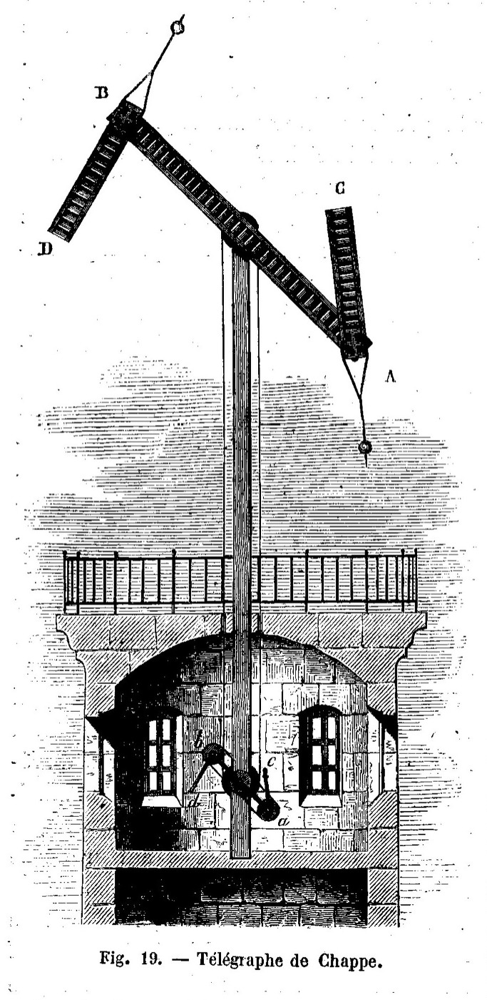
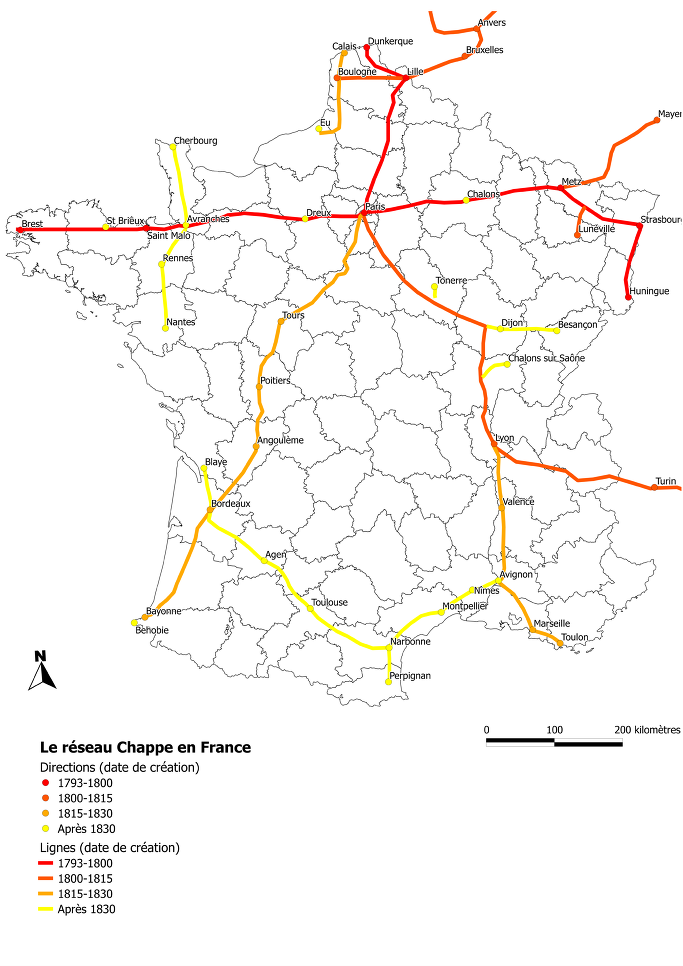
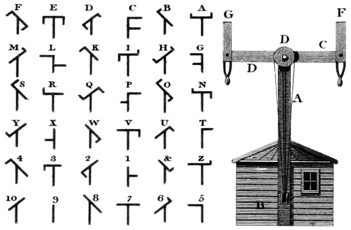
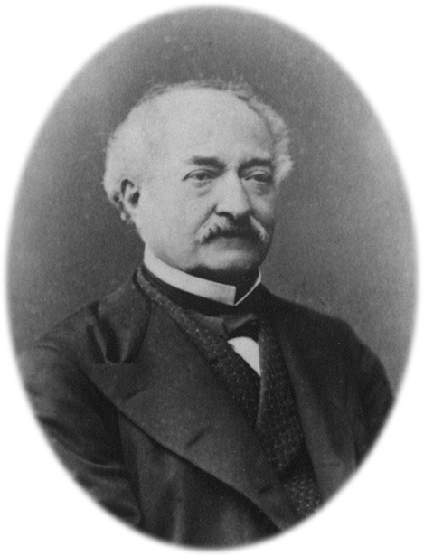
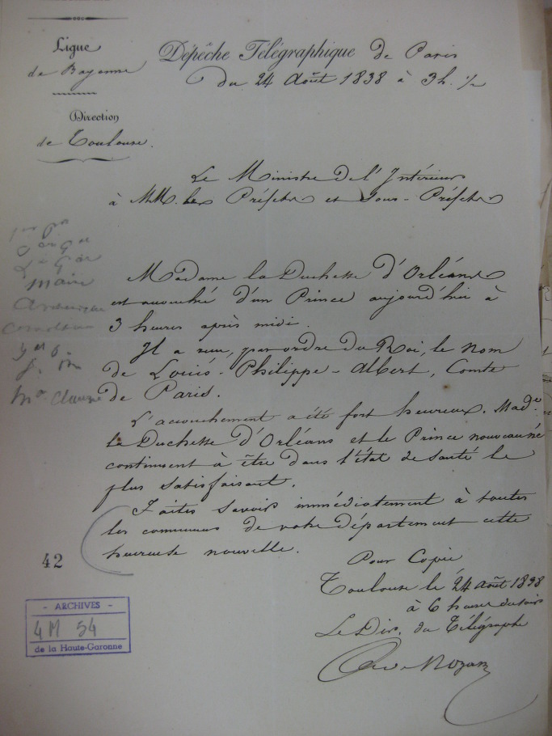
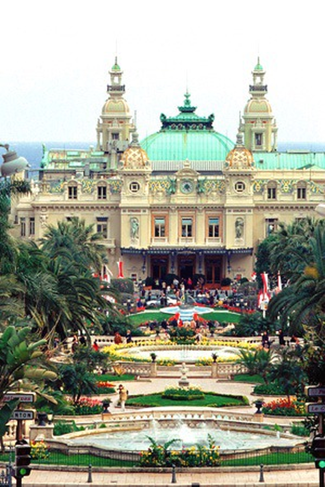

1834년, 사상 최초의 해킹 사건 발생하다
게시: 2017-10-07T04:08:30+09:00
사전적 정의에 따르면 해킹이라는 말의 뜻은 '컴퓨터나 네트워크에 대한 인가되지 않은 침입'을 뜻합니다. 당연히 해킹이라는 범죄는 컴퓨터가 발명된 이후에 나왔을 것 같지만, 실은 최초의 해킹 범죄는 1834년 프랑스에서 벌어졌고, 그로 인해 범인은 꽤 상당한 금전적 이익도 챙겼으며, 결국 체포되어 재판까지 열렸습니다. 그리고 그 재판 결과는 무죄였고, 이 사건 때문에 새로운 법이 만들어지는 소동까지 벌어졌지요. 19세기 전반에 해킹이라니 ! 대체 어떤 사건이 벌어졌던 것일까요 ?
때는 1791년으로 거슬러 올라갑니다. 전화도 무선통신도 없던 시절 가장 확실하면서도 빠른 통신 수단은 촛농으로 봉인한 편지를 쾌마를 탄 전령이 직접 들고 뛰는 파발마였습니다. 그러나 아무리 말이 빨라도 이건 시간이 너무 오래 걸리는 일이었지요. 특히 빠르고 신뢰성 있는 통신 수단은 군사적으로도 꼭 필요한 것이었습니다. 따라서 더 빠른 통신 수단에 대해 유럽 각국은 별의별 방법을 쓰고 있었습니다. 봉화나 전서구 등이 다 그런 노력 중 하나였습니다만, 이것들은 복잡한 내용을 전하지 못하거나 신뢰성이 떨어졌습니다. 그러다 1792년 클로드 샤프(Claude Chappe)라는 프랑스인이 높은 탑에 막대기로 연결된 신호봉을 이용한 신호 전달 체계를 발명하면서 프랑스는 물론 유럽 전역에 획기적인 통신 혁명이 일어납니다.

(텔레그라프의 단면도입니다. 아래 기계실에 있는 작은 가로대와 신호봉은 그 위에 있는 진짜 가로대와 신호봉이 취하는 각도와 동일한 모습을 취하게 되어 있었습니다. 그렇게 운영 요원이 굳이 밖에 나가서 그 모양을 눈으로 확인하지 않아도 되었기 때문에 혼자서도 조작이 가능했습니다.)
클로드 샤프가 발명한 것은 전부터 사용되던 세마포어(semaphore) 신호 체계를 더욱 정교하게 만든 것으로서, 좀더 구체적으로는 신호 장치탑과 거기서 사용될 코드였습니다. 2~3층짜리 탑 위에 높은 장대를 세우고, 그 끝에 좌우로 기울일 수 있는 가로대를 얹은 뒤, 그 가로대 양쪽 끝에 역시 회전하는 신호봉을 붙인 것이 신호 장치탑이었고, 이 가로대와 양쪽 신호봉들의 위치와 각도를 통해 약 12~25km 떨어진 다른 신호탑으로 신호를 보내는 것이 기본 원리였습니다. 가로대와 신호봉의 각도 조합을 통해 196개 조합의 신호를 보낼 수 있었는데, 알파벳과 숫자 등이 모두 가능했고 심지어 실수로 전달된 신호를 취소하는 백스페이스 기능까지 있었습니다. 물론 이를 응용하여 암호화된 전문을 보내는 것도 가능했습니다. 이 장치로 실제 원거리 통신이 가능하다는 것이 실험을 통해 최초로 증명된 것은 1791년 3월이었습니다. 샤프 형제들이 16km의 거리에서 성공적으로 짧은 문장을 송수신한 것입니다. 이때 샤프 형제들이 주고 받은 최초의 문자은 이런 것이었습니다.
"si vous réussissez, vous serez bientôt couverts de gloire”
(성공한다면 그대들은 곧 영광으로 뒤덮히리라)
이 혁신적인 통신 네트워크에 대해 클로드 샤프는 처음엔 '빠른 글쓰기'라는 뜻의 타키그라프(tachygraphe)라는 이름을 붙였으나, 친구 중 하나가 그보다는 '원격 글쓰기'라는 뜻의 텔레그라프(télégraphe)를 제안했고, 이것이 그대로 채용되었습니다. 예, 전보 또는 전신이라고 해석되는 이 텔레그래프라는 단어는 전기 신호가 발명되기 훨씬 이전인 1791년에 탄생한 것입니다.
(클로드 샤프의 초상입니다. 그의 발명품은 진짜 전기 전신기가 발명된 1849년 이후로도 몇 년간 더 쓰이다가 1850년 중반 경에야 퇴역할 정도로 19세기 전반부 유럽 전역에서 널리 사용되었습니다. 스웨덴에서는 1880년까지도 일부 지역에서 사용되었다고 합니다.)
아시다시피 이때는 프랑스 대혁명이 발발한 직후인데, 그 소란통에 그런 발명품을 구현하는 것이 쉬웠을까요 ? 실은 그 혁명 덕분에 구현이 쉬웠습니다. 호전적인 혁명정부는 앞뒤 가리지 않고 오스트리아와 스페인, 더 나아가 프로이센과 영국에게도 선전포고를 했고 당장 오스트리아의 속국인 네덜란드에서 전투가 발발했습니다. 그리고 파리의 혁명정부는 당장 네덜란드 전선의 시시각각 상황이 몹시 궁금했습니다. 덕분에 1792년 네덜란드와의 국경 쪽인 릴(Lille)과 파리 사이에 샤프의 텔레그라프 네트워크가 구축되었고, 성공적으로 메시지를 주고 받을 수 있다는 것이 입증되었습니다. 덕분에 2년 후인 1794년에는 릴 바로 남서쪽에 있는 국경 도시 콩데-쉬르-레스코(Condé-sur-l'Escaut)를 오스트리아군으로부터 빼앗았을 때 그 소식을 파리 혁명정부는 불과 1시간 뒤에 통보받을 수 있었습니다. 1798년에는 독일과의 국경인 스트라스부르(Strasbourg) 쪽으로도 이 네트워크가 구축되는 등 곧 다른 방향으로도 텔레그라프 네트워크가 구축되었고, 덕분에 나중에 황위를 차지한 나폴레옹은 멀리 떨어진 프랑스 주요 도시들로부터의 소식을 거의 실시간으로 받을 수 있었습니다. 영국 같은 다른 국가들도 이 요긴한 발명품을 곧 복제하여 사용하기 시작했습니다. 군사적으로 너무 요긴했거든요.
이 시스템의 단점이라면 야간에는 통신이 불가능했다는 점이었습니다. 신호봉 양쪽 끝에 등불을 달면 밤에도 전문 송수신이 가능하지 않을까 시험도 해보았으나, 10km가 넘는 거리에서 등불 따위는 식별이 불가능했습니다. 19세기 중반에 전신기 및 거기에 쓸 모르스 부호를 만든 모르스(Samuel Morse)가 자신의 발명품인 전기 전신기를 팔러 다닐때, 각국 기관들은 기존의 이 샤프 텔레그라프가 워낙 훌륭하여 굳이 전기 전신기로 바꾸려하지 않아 애를 먹었다고 합니다. 결국 모르스의 전기 전신기가 팔리기 시작한 것은 '밤에도 송수신이 가능하다'라는 점이었다고 하네요.

(프랑스 전역을 연결한 연도별 텔레그라프 네트워크입니다.)
이 텔레그라프는 나폴레옹 전쟁이 끝난 뒤에도 파리와 지방 간의 공문 송수신에 활발히 잘 사용되었습니다. 1844년 발표된 알렉상드르 뒤마의 장편 소설 '몽테 크리스토 백작'에서도 이 텔레그라프에 대한 이야기가 나올 정도였습니다. 이 소설 속에서는 주인공 에드몽 단테스(Edmond Dantès)가 이 텔레그라프 송신 요원을 매수하여 가짜 전문을 보내 주식 시장을 조종하는 이야기가 나옵니다. 그러나 이건 어디까지나 소설 속에서나 나올 수 있는 이야기였습니다. 당시 텔레그라프는 국가 기간 통신망이었기 때문에 주기적인 감사 및 교차 확인이 계속 되었고, 만약 허위 정보가 텔레그라프를 통해 송수신될 경우 어느 기지에서 그런 허위 정보가 흘렀는지 금새 들통이 나서 관련자가 엄벌에 처해지기 때문이었습니다.

(텔레그라프 가로대와 신호봉의 각도에 따른 전송 문자입니다. 물론 이것 외에 다양한 조합이 있었는데, 최대 4가지 모양을 하나로 하여 여러가지 지정단어를 보낼 수 있었습니다. 4가지 이상의 조합은 너무 복잡해서 비실용적이었다고 하네요.)
그런데 몽테 크리스토 백작이 발표되기 훨씬 1834년, 블랑 형제(François Blanc, Louis Blanc)라는 쌍동이 형제가 보르도(Bordeaux)에서 이 텔레그라프 네트워크를 해킹하여 금융 시장에서 꽤 큰 돈을 버는 사건이 발생했습니다. 그러고도 2년간이나 발각되지 않았지요. 대체 무슨 일을 저질렀던 것일까요 ?
이 블랑 형제는 작은 시골 마을에서 어린 시절을 보내던 중, 마을에 온 유랑극단의 카드놀이 야바위꾼이 어리숙한 마을 아저씨들의 돈을 싹쓸이해가는 것을 보고 그 길로 유랑극단을 따라 가출한 이후 흘러흘러 지방 도시인 보르도로 흘러들어온 28세의 청년들이었습니다. 이 형제는 보르도에 정착하면서 그 도시의 유가증권 시장에서 국채 등을 매매했는데, 무슨 재주를 피웠는지 놀라운 수익률을 냈습니다. 알고보면 이 형제는 파리에서 보르도로 이어지는 텔레그라프 네트워크를 해킹한 것이었는데, 그 방법이 매우 기발하면서도 매우 간단했습니다.

(노년의 프랑수아 블랑입니다.)
당시 보르도와 같은 지방 도시의 유가증권 시장에서 국채 가격은 파리 시장에서의 국채 가격이 내리거나 올랐다는 소식이 날아오면 당연히 그에 따라 내리거나 올랐습니다. 그런데 그런 시장 정보는 정기 우편마차를 통해 보르도까지 오는데 보통 2~3일이 걸렸습니다. 따라서 다른 사람들보다 불과 몇 시간만이라도 빨리 파리의 유가증권 시장 정보를 받아보는 것이 지방 금융시장에서의 성공 여부였고, 다른 경쟁자들은 이를 위해 별도로 고용한 파발마 또는 전서구 같은 것을 이용하기도 했습니다. 그러나 블랑 형제는 기발한 방법을 썼습니다. 파리에서 보르도로 이어지는 여러 텔레그라프 기지국 중 중간 지점인 투르(Tour)의 운영 요원 한명을 매수하여 파리의 국채 가격이 올랐는지 내렸는지를 표시하는 신호 하나를 전문 속에 끼워넣은 것이었습니다. 그 신호 뒤에는 곧바로 '백스페이스', 즉 방금 보낸 신호는 실수이니 무시하라는 신호를 보냈기 때문에, 전문의 최종 수신자가 받아보는 종이 위에 적히는 평문 메시지에는 아무런 비정상 기호가 포함되지 않았습니다. 그러나 블랑 형제가 보르도에서 고용한 별도 감시원이 보르도 텔레그라프 기지 근처에서 마지막 중계 기지의 신호를 망원경으로 관찰하고 있다가, 백스페이스 신호 바로 전의 이상 신호 하나를 잡아내어 블랑 형제에게 알려주었습니다. 이를 통해 블랑 형제는 파리 국채 가격이 올랐는지 내렸는지의 최소한의 정보를 누구보다 더 빨리 받아볼 수 있었던 것입니다. 이 형제는 이런 식으로 2년 동안 국채 거래를 통해 꽤 많은 돈을 벌었습니다.

(프랑스의 마지막 왕세자였던 오를레앙 공작 Louis Philippe Albert d'Orléans의 탄생을 알리는 1838년 전문입니다. 이 전문은 파리에서 툴루즈로 텔레그라프 네트워크를 통해 2시간 30분만에 전달된 것인데, 이렇게 사진에서 보이는 것처럼 최종 수신자에게는 당연히 종이 위에 깔끔하게 평문으로 필사되어 전달되었습니다. 중간 기지국에서 신호 오타를 내고 그걸 백스페이스 신호로 지웠다고 해서 최종 문장 위에까지 오타와 백스페이스 기호까지 올릴 이유는 없었지요.)
결국 이 형제의 해킹 실력의 비결은 가장 고전적인 해킹 기법인 소셜 엔지니어링(social engineering, 내부자를 매수하거나 설득하여 비밀번호 등을 알아내는 기법), 즉 사람 관리였던 셈입니다. 1836년 이 형제의 해킹 행각이 드러난 것도 결국 사람 관리에서 비롯된 문제였습니다. 투르의 그 매수된 텔레그라프 운영 요원이 그만 병에 걸려 일을 계속 하는 것이 어렵게 되었는데, 이 사람은 블랑 형제로부터 매달 받던 뇌물이 끊기는 것이 너무 아쉬웠습니다. 그래서 자신의 후임으로 온 요원에게 블랑 형제와의 비밀에 대해 털어놓고 자신이 하던 일을 계속 하면서 그 뇌물을 나눠가지자고 제안을 했던 것입니다. 모든 공무원이 다 그렇게 돈만 밝히는 것은 아니었습니다. 이 후임 요원은 이 이야기를 듣고 관계 당국에 그대로 보고했고, 블랑 형제는 결국 법정에 서게 되었습니다.
그러나 블랑 형제는 다음해 벌어진 공판에서 최종적으로 무죄 판결을 받았습니다. 이런 기간 통신망에 대한 해킹에 대한 법률이 전혀 없었던 것입니다. 게다가 블랑 형제의 범죄(?)로 인해 손해를 본 사람이 없다는 점도 고려가 되었지요. 그 후 당국은 이런 일의 재발을 막기 위해 통신 시설은 전적으로 정부 업무에만 사용되어야 한다는 법령을 새로 만들어야 했습니다.
결과적으로 블랑 형제는 두둑해진 돈지갑을 가지고 자유의 몸으로 보르도를 뜰 수 있었습니다. 이 돈을 종자돈으로 해서 블랑 형제는 유럽 이곳저곳에서 도박장 운영을 하며 돈과 명성을 쌓은 뒤, 당시 경영상의 어려움에 빠져있던 모나코(Monaco)의 몬테 카를로 카지노(Monte Carlo Casino)를 인수하고 그 주변 도로와 철도에도 투자하여 유럽 각국의 귀족들에게 편리하게 올 수 있는 고급 도박 시설을 제공, 오늘날의 유럽 최고의 도박장으로 성장시켰습니다. 두 형제 중 더 주도적인 역할을 했던 프랑수아 블랑은 71세의 나이로 스위스의 휴양지에서 죽었는데, 남긴 유산이 무려 7천2백만 프랑에 달했다고 합니다. 결국 인류 역사상 최초의 해커 이야기는 해피 엔딩으로 끝난 것이지요.

(모나코에 있는 몬테 카를로 카지노입니다. 이 모든 것의 시작은 해킹에서 비롯되었다는 것이 믿어지십니까 ?)
여담으로, 해커인 블랑 형제의 성공이 있게 한 기반이 된, 당대의 인터넷이라고 할 수 있는 텔레그라프 네트워크를 발명한 클로드 샤프는 어떻게 되었을까요 ? 나폴레옹이 아우스테를리츠 전투에서 승리하기도 전인 1805년, 자살로 짧은 생을 비극으로 마쳤습니다. 지병에 대한 비관도 있었으나, 그의 발명을 시기한 경쟁자들이 그의 발명은 기존에 육해군에서 사용하던 신호 체계를 표절한 것에 불과하다는 비방을 집요하게 계속한 것이 원인이었다고 합니다. 씁쓸한 마무리지요 ?
Source : https://www.techopedia.com/definition/26361/hacking
https://www.1843magazine.com/technology/rewind/the-crooked-timber-of-humanity
https://en.wikipedia.org/wiki/Semaphore_line
https://en.wikipedia.org/wiki/Claude_Chappe
https://fr.wikipedia.org/wiki/François_Blanc
https://fr.wikipedia.org/wiki/Code_Chappe